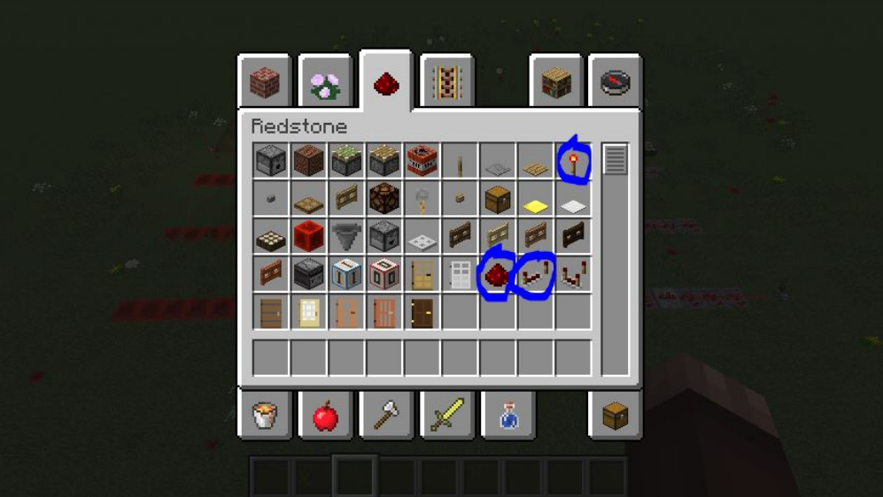
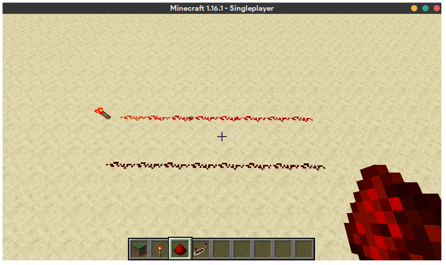
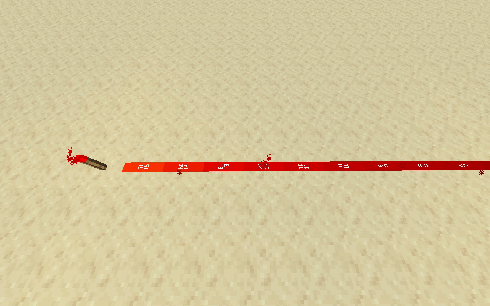
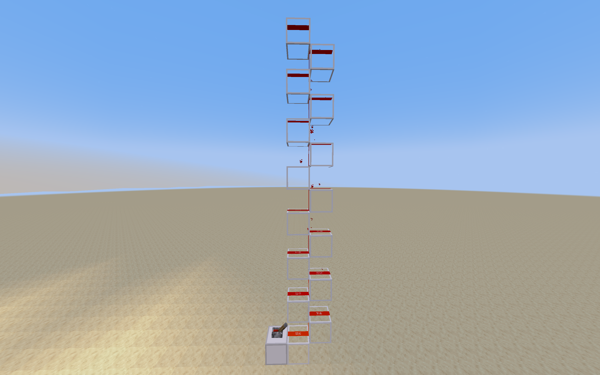
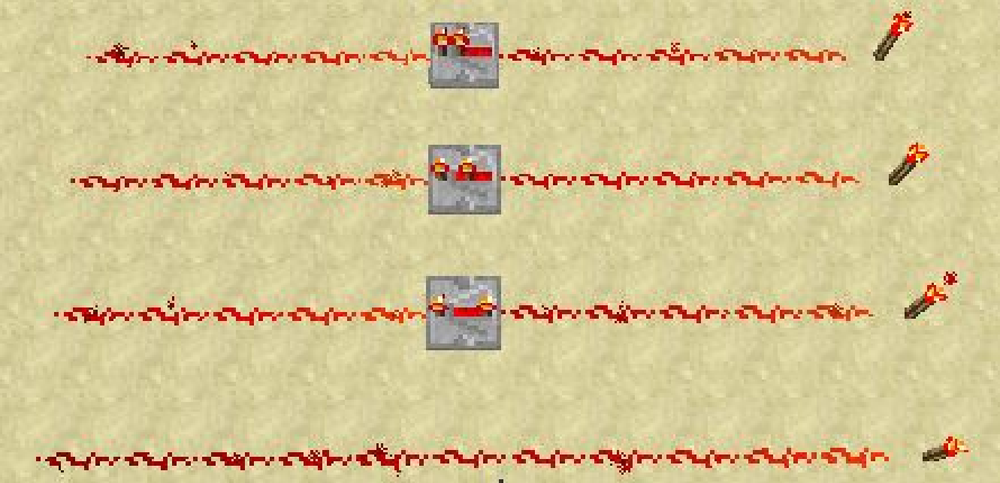
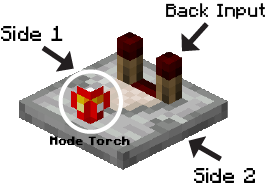
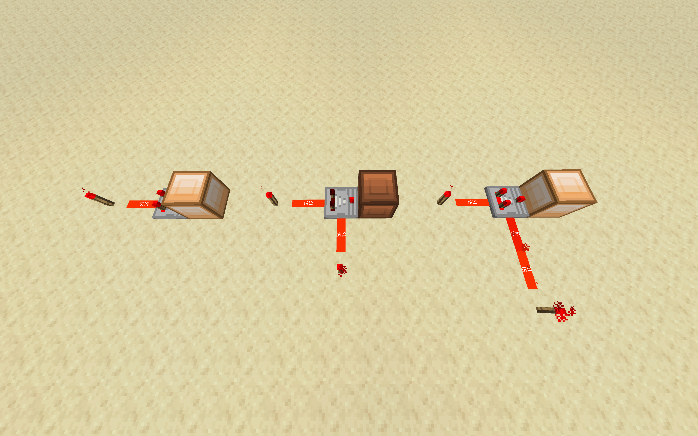
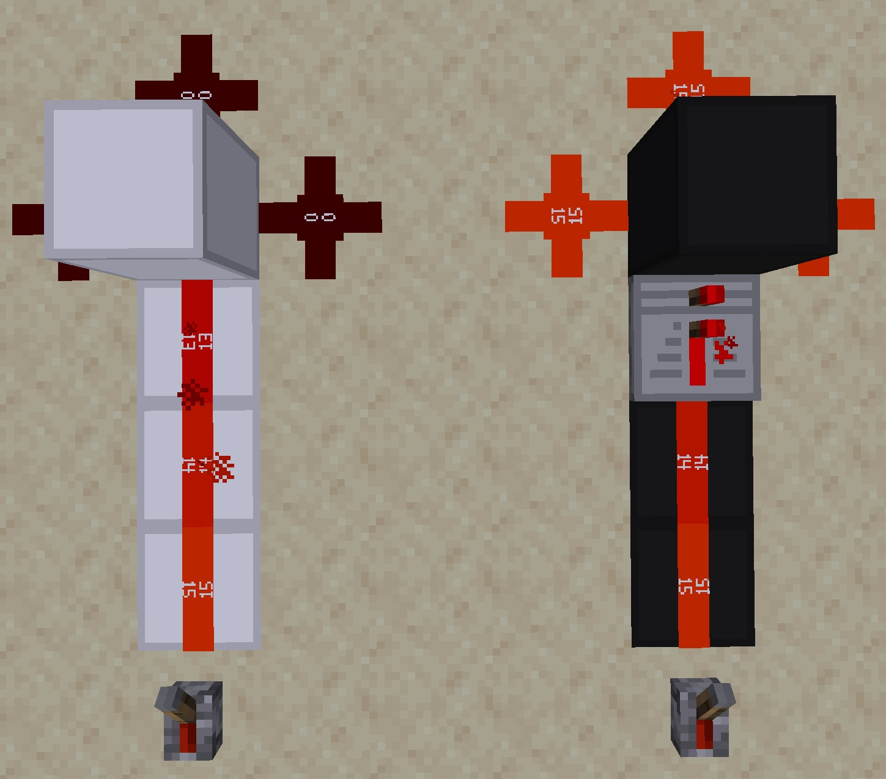

Redstone forms the building blocks of logic in Minecraft. Simply put, it is a wiring system within Minecraft that provides players with some very basic logical functions. By leveraging those functions that emulate wiring mechanics in the real world, we can build accurate representations of digital circuits within Minecraft, using redstone.
If you have taken a digital logic design class already, you may already see some parallels between the components that Redstone provides and digital logic design components in the real world. However, do not be misled. The functionality of some of these redstone components involve nuances that you may not be aware of.
When viewing the Creative Mode menu (after you've created a world and are up and running), it's helpful to navigate to the 'Redstone' tab to very quickly find items you'll need for this class.
Although you are provided a multitude of redstone gadgets and tools in this menu, we will only really be using the redstone dust, redstone torch, and redstone repeater items in this class. (Circled below)
Note: In newer version of Minecraft, these tools may not be in this exact location. However, they will always be found within the 'Redstone' tab.
Using these three items, combined with most any block of your choice, it's possible to build a fully programmable computer in Minecraft!
Try and place these blocks on the ground within your world in different combinations and see what happens. As you can imagine, these three components emulate the basics of wiring in the real world.
The redstone wire works like a piece of copper wire, a redstone torch functions more or less as a source of electricity, and a redstone repeater works as a simple range extended.
Thankfully, this is as simple as it gets. In no way will we be factoring in things like resistance, current, voltage, etc.- if we did, this class would be a circuits class, and I would refuse to teach it, as I'm not a sadist.
Instead, we can observe that Redstone wiring in Minecraft is a fairly trivial process. Here are a few key things that you should understand about redstone current.
As mentioned above, redstone wiring is a lot more simple than wiring in the real world. It can be in one of two states, on or off. (i.e. 1 and 0)
Here, you can see redstone wire in these two states: on (above) and off (below).
There are two important points to be noted in the above image.
First, Redstone torches are a source of an 'on' signal, or "redstone current" (colloquially). You can see that the wire that is 'on' is visually distinct from the wire that is off.
Second, observe that the vibrance of the bright red in the 'on' wire is growing duller the farther from the torch that it gets. This can be somewhat misleading, as one may think that there is a functional difference between more vibrant 'on' wire and more dull 'on' wire. In actuality, there is no difference. Vibrant 'on' wire is functionally equivalent to more dull 'on' wire. The vibrancy itself is known as 'signal strength', and it eventually runs out. That is, if your redstone wire exceeds a certain distance from a power source, the signal dies out. The reasoning for this feature in Minecraft will be explained below.
Redstone wire has two states- on or off. As long as signal strength is greater than 0, a wire is considered 'on'.
For now, here's an easy way to identify which wires are 'on'- you will see small red particle effects being emitted from 'on' wire, no matter the signal strength.
Although Redstone wire only has two states as we mentioned before, wire that is 'on' also has an additional property- signal strength. In other words, if you provide redstone current to a wire using a torch, after 15 blocks of 'on' wire, that current will expire.
Signal strength starts at 15 (for blocks adjacent to a power source), and decreases by 1 for every block that the current traverses until it reaches 0, at which point the wire is considered 'off'.
You may be wondering, why does this happen? It's for a few reasons, some involving the limitations of Minecraft itself.
For now, just remember that Redstone 'power' coming from a source block is finite in range, and that you'll have to take care to extend it when you need to.
If you place glass blocks in a zig-zag pattern going upwards, you can propagate redstone signal upwards. We use this a lot when designing shifters, counters, memory, etc. It works really well with 8-bit systems
For all intents and purposes, you can think of a redstone repeater as a simple range extender for a redstone current. Remember our previous example with a torch and wire? If we have redstone current flowing through a wire coming from a source 15 blocks away, we can place a repeater down instead of another piece of wire to increase the strength of the current back up to 15. In Vanilla Minecraft, this didn’t come for free; redstone repeaters added a small delay in exchange for increasing current strength back up to 15. Additionally, you were able to increase the delay by right clicking on the repeater, if you so desired. You’re welcome to read more about repeaters on the Minecraft Wiki if you’d like more information.
Here, you can see a wiring setup with a repeater set on the first setting, second, and third setting. As you go from the first to the third setting, you can increase the delay between the inception of the current (in this case, the placing of the torch) and the final piece of wire it is slated to reach. Note that after passing through the repeater, the wire is once again a very vibrant red, signifying that the strength of the current has been once again set to 15.
In contrast, you can see that the fourth wire in the picture has no repeater placed in the middle of it. As such, the signal strength hasn't been 'renewed'. We can see evidence of this at the far left end of all these wires- the vibrancy of the bottom-most wire is clearly the lowest.
This feature allowed circuits to play nice with the game engine. However, we are an adventurous bunch, and we like to live dangerously. For that reason, in the CMSC389E mod, the delay on the first setting of a repeater has been set to 0. As you can imagine, this can be leveraged to wreak havoc on Minecraft's game engine, but this is also what allows our more complex circuits to function at a pace that isn’t agonizingly slow. For that reason, unless you desire a massive delay, we advise you to keep all your repeaters set to the first setting for this class. Not doing so may result in faulty circuits, as you’ll see in later projects.
It's also important to note that current can only flow one way through a repeater. A common mistake that newbies make is placing a repeater facing in the wrong direction, which will stop your current in its tracks. Make sure to check to see which direction your repeaters are facing at all times.
As such, repeaters can be used as diodes, to prevent backflow. That is, you can effectively enforce a direction for current to travel on your wires. We will see the uses of this in future sections.
Comparators are devices that take three input signals: one from the back and two from the sides. They operate in two modes:
back - max(side1, side2).
back > side1 and back > side2.
In other words, the comparator outputs signals only when specific conditions are met. You can right-click on a comparator to toggle between modes. We primarily use the subtract mode. Comparators are valuable tools for creating multiplexers, adders, and much more.
 What difference does it make if a block is "soft" or "hard" powered. Why do you need to even know this?
Yes, this might be a little more than you need, but it comes in handy when creating compact builds. When you are transferring signal into a block, there are two options. You can either: send the signal directly or use a repeater facing the block in its path. Sending the signal directly is known as "soft-powering" the block, since the block retains the redstone signal which can be used for other repeaters, comparators, redstone lamps, and similar blocks. HOWEVER, soft-powered blocks can NOT power redstone around it. Hard-powered blocks function the same as soft-powered blocks, except now that they can power redstone around it. This comes especially in handy when we want to make redstone lines cross over each other in Minecraft. Try it out or refer to our lecture!
